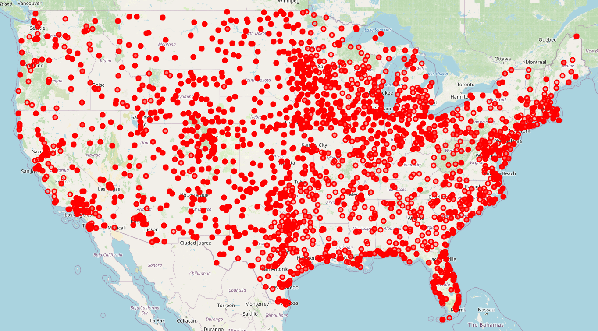
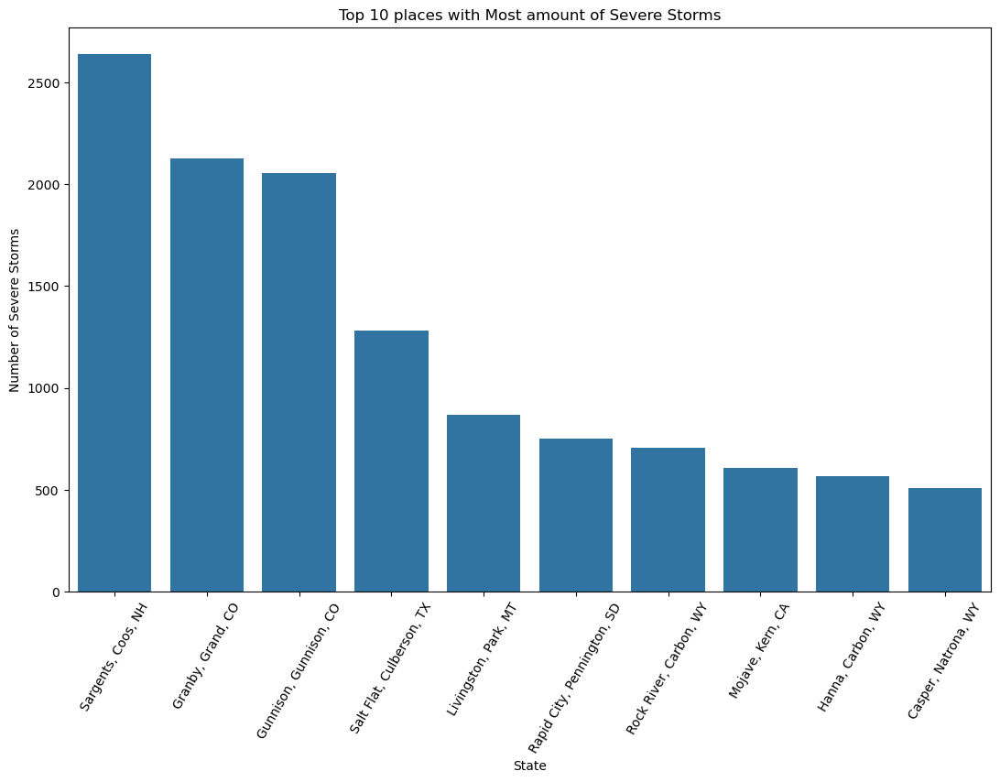

Introduction
Which U.S. regions consistently experience the highest frequency of severe weather events over time?
This project analyzes historical storm data to identify U.S. regions most consistently impacted by extreme weather. I aim to determine which states or areas experience the highest frequency of events like hurricanes, tornadoes, floods, and winter storms over time. This analysis seeks to provide a data-driven answer to guide preparedness and resource allocation.
Data Source
US Weather Events (2016 - 2022)The dataset that is used is a compilation of 8.6 million weather events in the United States from 2016 to 2022, sourced from 2,071 airport-based weather stations nationwide.
- Severe-Cold
- Fog
- Hail
- Rain
- Snow
- Storm
- Other precipitation
The weather types include:
The dataset includes the severity of each event ranging from light to severe, along with the start and end times, amount of precipitation, and location (state and coordinates).
Data Pre-processing
The first thing I did to clean the dataset was to find if there were any null values. The 'City' and 'ZipCode' columns had null values. ZipCode had more null values so i removed it completely becuase it's not needed, then removed the null values from the 'City' column.
I based the location of the weather using 'City' for the location of the weather. Since there are multiple Cities with the same name, I combined the City, County, and State into one new column called 'Location'. I then Dropped the 'City' and 'County' columns.
Visualizations
Severe Storms in the US
The places with the highest frequency of severe storms over time are the Southeastern region. There is a cluster in the upper midwest and a cluster in the southwest in the great plains. This is where warm air coming from the gulf of mexico meets the cold air coming from the artic during the spring. This creates massive storms. This Visualization was created with Folium, an interactive mapping library for Python. It took me days to create this visualization figuring out a way to get a good map that didn't take 30 minutes to render.
Top 10 Severe Storms by place
Impact
The results show where the highest frequency of severe storms occur in the US. This could be used by governments to plan for preparedness and resource allocation.
References
US Weather Events (2016 - 2022)
Moosavi, Sobhan, Mohammad Hossein Samavatian, Arnab Nandi, Srinivasan Parthasarathy, and Rajiv Ramnath. “Short and Long-term Pattern Discovery Over Large-Scale Geo-Spatiotemporal Data.” In Proceedings of the 25th ACM SIGKDD International Conference on Knowledge Discovery & Data Mining, ACM, 2019.